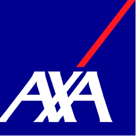
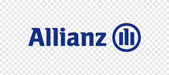
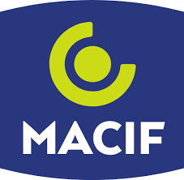

Vous avez un produit à structurer. Je vous aide à le concevoir et le livrer efficacement.
Product Owner avec plus de 10 ans d'expérience dans l'accompagnement de projets complexes et de transformations digitales.

Product Owner agile spécialisé dans les écosystèmes assurantiels.
Une approche holistique du produit.
De l’idée initiale à la mise en production, j’accompagne chaque étape du cycle de vie de votre produit digital.
Product Discovery
Identification des besoins utilisateurs et validation de la proposition de valeur avant le développement.
Product Management
Définition de la vision produit, roadmap stratégique et pilotage de la performance par les KPIs métiers.
Product Delivery
Coordination agile des équipes tech, gestion du backlog et assurance de la qualité des livrables finaux.

"Un produit réussi naît de l’équilibre entre business, technologie et expérience utilisateur."
Bonjour, je suis Jawad.
Avec 10 ans d’expérience dans le secteur de l’assurance et 7 ans dans le digital, j’accompagne les organisations dans la conception et l’évolution de leurs produits numériques..
J’aide les organisations à transformer leurs enjeux métier en solutions digitales concrètes, en conciliant vision business, faisabilité technique et expérience utilisateur.
J’interviens à l’interface entre business, technologie et expérience utilisateur afin de délivrer des produits utiles, performants et alignés avec les objectifs stratégiques.
15+
Années d'expérience
20+
Projets livrés
Services & Accompagnement

Expertise assurance & Parcours clients
Apport d’une forte compréhension des parcours clients assurance, des enjeux métier et des contraintes réglementaires pour concevoir des produits adaptés au secteur.

Product ownership & Backlog management
Structuration du backlog, rédaction de user stories et priorisation des fonctionnalités pour maximiser la valeur livrée.

Cadrage produit & Discovery
Ateliers de Design Thinking et cadrage, analyse des besoins utilisateurs, définition de la vision produit, prototypage rapide et cadrage du MVP pour sécuriser le lancement du projet.
Ils m'ont fait confiance


